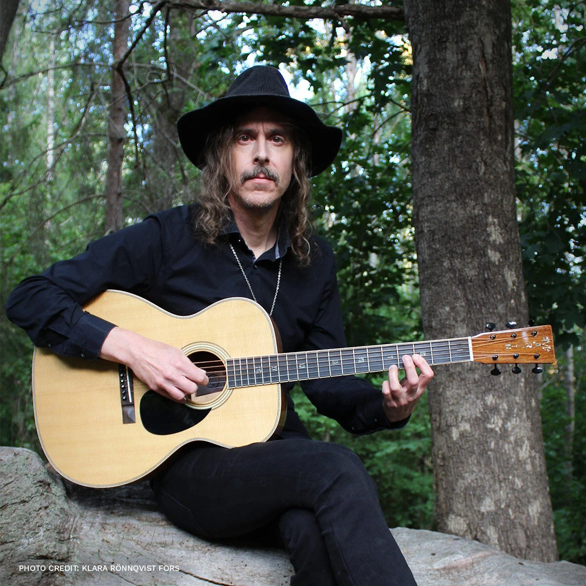

Progressive death metal lords
Opeth is a Swedish progressive metal band from Stockholm, formed in 1990. They are known for their dramatic evolution from a death metal band into one of the most innovative and influential acts in progressive music.
This is Mikael Åkerfeldt
Singer and guitarist of Opeth

Mikael Åkerfeldt is a Swedish musician born in Stockholm in 1974, best known as the lead vocalist, guitarist, and primary songwriter of the progressive metal band Opeth. He is celebrated for his distinctive dual vocal style and his role in shaping modern progressive music.
Åkerfeldt's signature is his dynamic vocal range, seamlessly shifting between a clean, melodic baritone and a powerful death metal growl. His songwriting is deeply rooted in progressive rock, drawing from 1970s obscure rock and folk, jazz, and even classical influences. His career mirrors Opeth's evolution. Early albums were defined by complex, dynamic progressive death metal. This shifted dramatically with Heritage (2011), where he largely abandoned growled vocals for a purely progressive rock sound. After a period of clean singing, his growls returned powerfully on the 2024 album The Last Will and Testament.
Mikael Åkerfeldt joined Opeth in 1990 at age 16, originally as a bassist. When original singer David Isberg left soon after, Mikael took over vocals and gradually became the band’s frontman, guitarist, and primary songwriter. He is the only founding member still in Opeth and has shaped nearly every era of their sound.
His time in Opeth is defined by constant evolution. Early albums like Orchid, Morningrise, and My Arms, Your Hearse built their reputation for long, dynamic progressive death metal. With Blackwater Park (2001), produced by Steven Wilson, Opeth reached a landmark blend of brutal riffs, acoustic passages, and clean and growled vocals. Deliverance and Damnation showed the band’s two extremes, while Ghost Reveries and Watershed pushed their complexity further.
Opeth's signature sound is a dynamic blend of contrasts. Their early work was rooted in Scandinavian death metal, featuring Mikael Åkerfeldt's powerful growls, but it was always intertwined with progressive rock, folk, blues, and jazz influences. Their lengthy compositions are famous for shifting between brutal, heavy passages and delicate acoustic sections with clean vocals.
A major turning point came with the 2011 album Heritage, where the band largely dropped death metal vocals and adopted a purely progressive rock sound. This shift continued on albums like Pale Communion and Sorceress, which drew heavily from 1970s prog rock. More recently, their 2024 album The Last Will and Testament marked a return to the heavier, growling style of their past
Opeth's music is defined by a total mastery of contrast. As one critic noted, the band puts "the very soft beside the very hard," creating a "double consciousness" where a passage of delicate, '70s-inspired progressive folk-rock can be violently interrupted by "scoured subtone screaming and double-bass-drum palpitations." This dynamic pendulum—swinging between "pastorally acoustic" guitars and "down-tuned chugging," between folk-rock sections and hard riffing in odd time signatures—is the band's signature
This approach extends to their song structures, which use a through-composition style rather than relying on traditional verse-chorus repetition. Songs achieve constant variation through the "constant introduction of new sections which retain the key, time signatures and overall feel." Guitarist Fredrik Åkesson has described Åkerfeldt's unique way of writing "time signature odd riffs" that are full of "polyrhythmical stuff," making the songs notoriously difficult to learn and perform.
Opeth has a history of performing in prestigious and unique venues, often captured for live releases:
Royal Albert Hall (London, 2010): For their 20th anniversary, Opeth played a legendary show at this iconic venue, performing Blackwater Park in its entirety. The performance was released as In Live Concert at the Royal Albert Hall
Red Rocks Amphitheatre (Colorado, 2017): This historic concert was released as Garden of the Titans, showcasing the band's power in a stunning natural setting
The Roundhouse (London, 2006): Recorded during the Ghost Reveries tour, this show was released as The Roundhouse Tapes
Amphitheatre of Pompeii (Italy, 2026): Opeth made their debut at this legendary ancient Roman site, a venue that has hosted Pink Floyd and King Crimson
Sydney Opera House (2025): The band performed two shows at this Australian landmark during their The Last Will and Testament tour